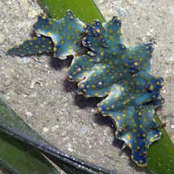
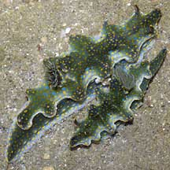
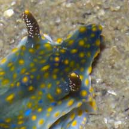
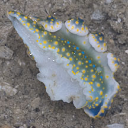
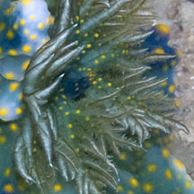
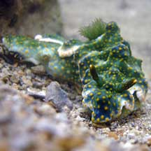
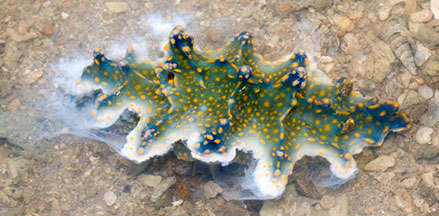

|
|
| nudibranchs text index | photo index |
| Phylum Mollusca > Class Gastropoda > sea slugs > Order Nudibranchia |
| 'Jolly
Green Giant' nudibranch Miamira sinuatum Family Chromodorididae updated May 2020 Where seen? This large chunky hard nudibranch is sometimes seen among coral rubble and reefs on our Southern islands. Usually several are seen at the same time, and then none for a while. It does look rather jolly and is large! It was previously known as Ceratosoma sinuatum. Features: 6-8cm long. The body is stiff, narrow with a short, broad tail. The front of the body generally pointed. The body edge has regular undulating lobes along the edge of the mantle from front to end. The lobes are armed with glands that secrete distasteful substances to discourage predators. There is a large horn-like lobe in front of the feathery gills. Colours usually green, with small yellow bumps, sometimes with tiny blue spots. The gills have tiny yellow spots. Like other members of the Family Chromodorididae, the Ceratosoma nudibranch absorbs the toxic chemicals in their sponge food and incorporate these chemicals into the mantle glands. According to Bill Rudman, most species of Ceratosoma have a long 'horn' that stick out and curves towards the head. This acts as a defensive lure attracting and sacrificed to potential predators. This 'horn' contains most of the distasteful chemicals stored from the sponges that they feed on. What does it eat? It is eats sponges. |
 Large lobe in front of gills. Pulau Semakau, Sep 05 |
 Sisters Island, Jul 06 |
 Small rhinophores. |
|
 Pulau Semakau, Feb 09 |
 Feathery gills with yellow spots. Labrador, Mar 07 |
 Terumbu Semakau, May 10 |
| 'Jolly Green Giant' nudibranchs on Singapore shores |
On wildsingapore
flickr
|
| Other sightings on Singapore shores |
 Releasing white fluid when alarmed. Pulau Hantu, Aug 15 Photo shared by Marcus Ng on flickr. |
Links
References
|